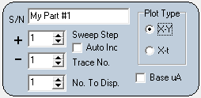
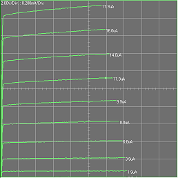

|   |
S/N Enter the description of the part into the serial number text box. This identifying text is saved with the trace data when a Data File Save operation is performed. The serial number text can also be assinged to a file name for script file output. Sweep Step This designation is used to identify multiple traces when stepping the base voltage or current. It is also refered to as the plus pin when probing mulitple pin devices. The collector probe is the plus polarity pin. Auto Inc When checked, Sweep Step will increment by one after a Run Sweep is completed. This allows the hands free use of a foot switch to record traces when probing multi pin devices. Note that the trace plot is for the Sweep Step minus one. This allows you to visually verify the captured trace while having the index ready for the next trace. Trace No.This designation is used to identify multiple components. It is also refered to as the negative pin when probing mulitple pin devices. the ground probe is the negative polarity pin. No. to Disp. When stepping the base voltage or current to obtain multiple characteristic curves for a transistor or FET, this display option allows up to ten curves to be simultaneously displayed. The curves always start with Sweep Step-1 and the last step is the value set in No. to Disp. Plot Type selects either an X-Y format or an X-t format. Use the X-Y format for characteristic curve tracing. Use the X-t format to check for clipping or anomalies in the waveform. Base uA(V) checking this box places a text value of the base current or voltage for that sweep at the end of the trace. Current or voltage are selected per the base toggle switch setting on Mini_CT. Main |